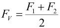
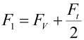
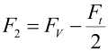

|
|
|


技术说明（齿形带）
前言：
在对齿形带传动进行尺寸计算和验证时，请遵循制造商的说明以获得最佳结果。大多数目录都详细说明了整个计算方法。由于更好的材料和带侧面形状使 V 带能够传递的功率不断提高，制造商的数据提供了唯一真正可靠的值。
弹性：
由于制造商目录提供的关于该主题的数据非常少，您必须谨慎对待皮带弹性的约束值。弹性（单位为 N）是将皮带拉长 100% 所需的力。
重量：
由于制造商目录中提供的关于该主题的详细信息不完整，您必须谨慎对待这些值。
皮带的预紧：
由于制造商目录提供的关于该主题的数据非常少，您必须谨慎对待约束值。计算方法和它使用的系数存储在 Z091-0??.dat 文件中，如有需要可以更改。
您可以使用以下步骤之一来计算各种类型皮带的所需预紧值。这里的数据取自目录：
皮带类型： | 预紧： | |
Breco AT5、AT10、AT20 | 0.5 | * 圆周力 |
Synchroflex AT3、AT3 GIII、AT5 GIII、AT10 GIII | 0.5 | * 圆周力 |
Isoran XL、L、H、8、14 | 0.625 | * 圆周力 |
HTD 3, 5, 8, 14 | 0.25 | * 最大允许圆周力 |
8MGT、14MGT Poly Chain GT2 | 0.5 | * 圆周力 |
RPP-HPR 8, 14 | 0.5 | * 圆周力 |
52.1 表：预紧
空载/负载时的力按照 [12] 中的公式 27/23 计算。
 | (53.1) |
 | (53.2) |
 | (53.3) |
Technical notes (toothed belts)
Preamble:
Follow the manufacturer’s instructions to achieve the best results when sizing and verifying toothed belt drives. Most catalogs detail the entire calculation method. As the amount of power V-belts can transmit improves because of better materials and flank shapes, manufacturers' data provides the only really reliable values.
Elasticity:
As the manufacturers' catalogs provide very little data on this subject, you must treat the belt elasticity constraint values with caution. The elasticity (in N) is the force required to lengthen the belt by 100%.
Weight:
As the details provided in manufacturers catalogs about this subject are not complete, you must treat these values with caution.
Pretensioning the belt:
As the manufacturers' catalogs provide very little data on this subject, you must treat the constraint values with caution. The calculation method and the factors it uses are stored in the Z091-0??.dat files where they can be changed if required.
You can use one of the following procedures to calculate the required pretensioning values for various types of belts. The data here is taken from the catalogs):
Belt type: | Pretension: | |
Breco AT5, AT10, AT20 | 0.5 | * Circumferential force |
Synchroflex AT3, AT3 GIII, AT5 GIII, AT10 GIII | 0.5 | * Circumferential force |
Isoran XL, L, H, 8, 14 | 0.625 | * Circumferential force |
HTD 3, 5, 8, 14 | 0.25 | * max. permitted circumferential force |
8MGT, 14MGT Poly Chain GT2 | 0.5 | * Circumferential force |
RPP-HPR 8, 14 | 0.5 | * Circumferential force |
52.1 table: Pretension
Forces in no load/load are calculated in accordance with [12], equation 27/23.
(53.1) | |
(53.2) | |
(53.3) |